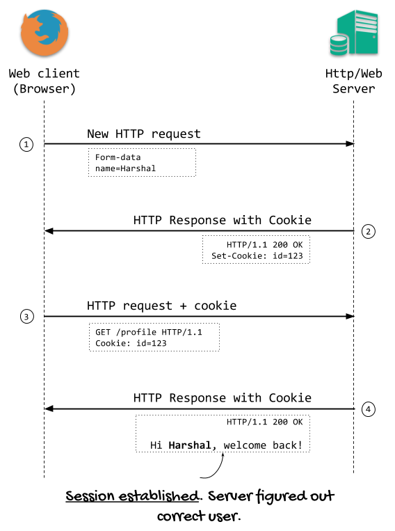

Manteniment de l’estat
Recorda que HTTP és un protocol sense estat, el que significa que un cop un servidor web completa la sol·licitud d’un client d’un recurs, la connexió entre els dos acaba. Dit d’una altra manera, no hi ha manera que un servidor recorde una que una seqüència de sol·licituds prové del mateix client.
Info
Mantenir l’estat és poder fer el seguiment d’una sequència de sol·licituds d’un client.
No obstant això mantenir l’estat, poder fer el seguiment d’una seqüència de sol·licituds d’un client, és molt útil. No podeu crear una aplicació que tinga cistella de la compra, per exemple, si no podeu mantenir l’estat. Heu de saber quan un usuari afegeix articles a la cistella o els elimina i el contingut final de la cistella si el client decideix adquirir els productes.
Per solucionar aquesta manca d’estat de la web tenim disponibles diverses tècniques com l’ús cookies o de sessions que veurem a continuació.
Combinant mecanismes d’autenticació i tècniques per a mantenir l’estat podem crear aplicacions web segures.
Galletes (cookies)
Una galleta és un fitxer de text que un lloc web guarda a l'entorn de l'usuari de navegador. El seu ús més típic és l'emmagatzematge de les preferències de l'usuari (per exemple, l'idioma en que s'han de mostrar les pàgines), perquè no haja de tornar a indicar-les la propera vegada que visiteu el lloc.
Si utilitzes Firefox com a navegador, pots accedir a Desenvolupador web – Inspector d'emmagatzematge des del
menú principal. Entre les seves característiques et permet consultar i editar les galetes emmagatzemades en el mateix.

En PHP, per emmagatzemar una galleta al navegador de l'usuari, pots utilitzar la funció setcookie. L'únic paràmetre
obligatori que has de fer servir és el nom de la galleta, però admet diversos paràmetres més opcionals.
setcookie(
string $name,
string $value = "",
int $expires = 0,
string $path = "",
string $domain = "",
bool $secure = false,
bool $httponly = false
): bool
Info
Per a més informació consulta: https://www.php.net/manual/es/function.setcookie.php.
Per exemple, si vols emmagatzemar en una galleta la data del darrer accés d'un usuari, pots fer:
setcookie ("last_visit_date", (string) time(), time() + 3600);
Els dos primers paràmetres són el nom de la galeta i el seu valor. El tercer és la data de caducitat de la mateixa en format timestamp (en l'exemple, una hora des del moment en què s'execute). En cas de no figurar aquest paràmetre, la galeta s'eliminarà quan es tanque el navegador. Tingues en compte que també es poden aplicar restriccions a les pàgines del lloc que poden accedir a una galeta en funció de la ruta.
Les galetes es transmeten entre el navegador i el servidor web utilitzant les capçaleres del protocol
HTTP. Per això, les sentències setcookie s'han d'enviar abans que el navegador mostre cap informació a pantalla.

Podeu trobar més informació en Ultimate Guide to HTTP Cookies
El procés de recuperació de la informació que emmagatzema una galleta és molt simple. Quan accedeixes a un lloc web, el
navegador li envia de forma automàtica tot el contingut de les galetes que emmagatzema relatives a aquest lloc en
concret. Des PHP pots accedir a aquesta informació per mitjà de la variable superglobal $_COOKIE.
Warning
Sempre que utilitzeu galetes en una aplicació web, heu de tenir en compte que en última instància la seva disponibilitat està controlada pel client. Per exemple, alguns usuaris deshabiliten les galetes al navegador perquè pensen que la informació que emmagatzemen pot suposar un potencial problema de seguretat. O que la informació que emmagatzemen pot arribar a perdre perquè l'usuari decideix formatar l'equip o simplement eliminar-les de sistema.
Si un cop emmagatzemada una galeta al navegador vols eliminar-la abans que expire, pots utilitzar
la mateixa funció setcookie però indicant una data de caducitat anterior a l'actual.
Question
Quina és la durada per defecte d'una galeta si no s'indica la data de caducitat, com en la següent crida a la funció setcookie?
setcookie ("idioma", "espanyol");
- Fins que es tanque el navegador de l'usuari.
- 1 hora.
Problemes de seguretat relacionats amb galletes
A l'hora de fer ús de galetes, cal ser conscient dels potencials problemes de seguretat que poden patir.
En l'article Ultimate Guide to HTTP Cookies s'exposen tres dels problemes més rellevants i la seua sol·lució.
Aquest article és una referència molt completa dels possibles valors i atributs que es poden fer servir les galetes: Set-Cookie headers
Maneig de sessions
Com acabes de veure, una forma per guardar informació particular de cada usuari és utilitzar galetes (cookies). No obstant això, hi ha diversos problemes associats a les galetes, com el nombre d'elles que admet el navegador, o la seva grandària màxima. Per solucionar aquests inconvenients, existeixen les sessions. El terme sessió fa referència al conjunt d'informació relativa a un usuari concret.
Aquesta informació pot ser tan simple com el nom de l'usuari mateix, o més complexa, com els articles que ha dipositat a la cistella de compra d'una botiga en línia.
Cada usuari diferent d'un lloc web té la seva pròpia informació de sessió. Per distingir una sessió d'una altra s'usen els identificadors de sessió (SID). Un SID és un atribut que s'assigna a cada un dels visitants d'un lloc web i l'identifica. D'aquesta manera, si el servidor web coneix el SID d'un usuari, pot relacionar-lo amb tota la informació que posseeix sobre ell, que es manté en la sessió de l'usuari. Aquesta informació s'emmagatzema en el servidor web, generalment en fitxers tot i que també es poden utilitzar altres mecanismes d'emmagatzematge com bases de dades. Com ja hauràs suposat, la qüestió ara és: ¿i on s'emmagatzema aquest SID, identificador de la sessió, que és únic per a cada usuari? Doncs hi ha dues maneres de mantenir el SID entre les pàgines d'un lloc web que visita l'usuari:
- Utilitzant galetes.
- Propagant el SID en un paràmetre de la URL. El SID s'afegeix com una part més de la URL, de la forma:
http://www.misitioweb.com/tienda/listado.php&PHPSESSID=34534fg4ffg34ty
En l'exemple anterior, el SID és el valor del paràmetre PHPSESSID.
Cap de les dues maneres és perfecta. Ja saps els problemes que té la utilització de cookies. Malgrat això, és el millor mètode i el més utilitzat. Propagar el SID com a part de la URL comporta majors desavantatges, com la impossibilitat de mantenir el SID entre diferents sessions, o el fet que compartir la URL amb una altra persona implica compartir també l'identificador de sessió.
La bona notícia, és que el procés de maneig de sessions en PHP està automatitzat en gran mida. Quan un usuari visita un lloc web, no cal programar un procediment per veure si hi ha un SID previ i carregar les dades associades amb el mateix. Tampoc has d'utilitzar la funció setcookie si vols emmagatzemar els SID en galetes, o anar passant el SID entre les pàgines web del teu lloc si et decideixes per propagar. Tot això PHP ho fa automàticament.
Server side cookies
A la informació que s'emmagatzema en la sessió d'un usuari també se li coneix com a galetes en la part de servidor (server side cookies). Has de tenir en compte que encara aquesta informació no viatja entre el client i el servidor, sí que ho fa el SID, bé com a part de l'URL o en una capçalera HTTP si es guarda en una galleta. En tots dos casos, això planteja un possible problema de seguretat. El SID pot ser aconseguit per una altra persona, i a partir de la mateixa obtenir la informació de la sessió de l'usuari. La manera més segura d'utilitzar sessions és emmagatzemant els SID en galetes i utilitzar HTTPS per a xifrar la informació que es transmet entre el servidor web i el client.
Configuració
Per defecte, PHP inclou suport per a la gestió de sessions. Abans, però, d'utilitzar sessions en el teu lloc web, has de configurar correctament PHP utilitzant els següents directives en el fitxer
php.ini segons corresponga:
| Directiva | significat |
|---|---|
session.use_cookies |
Indica si s'han d'usar cookies (1) o propagació a la URL (0) per emmagatzemar el SID. |
session.use_only_cookies |
S'ha d'activar (1) quan fas servir cookies per emmagatzemar els SID, i a més no vols que es reconeguin els SID que es puguin passar com part de la URL (aquest mètode es pot usar per usurpar l'identificador d'un altre usuari) |
session.save_handler |
S'utilitza per indicar a PHP com ha de emmagatzemar les dades de la sessió de l'usuari. Hi ha quatre opcions: en fitxers (files), en memòria (Mm), en una base de dades SQLite (sqlite) o utilitzant per a això funcions que ha de definir el programador (user). El valor per defecte (Files) funcionarà sense problemes en la majoria dels casos. |
session.name |
Determina el nom de la galleta que s'utilitzarà per guardar el SID. La seva valor per defecte és PHPSESSID. |
session.auto_start |
El seu valor per defecte és 0, i en aquest cas hauràs de fer servir la funció session_start per gestionar l'inici de les sessions. Si fas servir sessions al lloc web, pot ser bona idea canviar el seu valor a 1 per que PHP activi de forma automàtica el maneig de sessions. |
session.cookie_lifetime |
Si utilitzes l'URL per propagar el SID, aquest es perdrà quan tanque el navegador. No obstant això, si utilitzes galetes, el SID es mantindrà mentre no es destruisca la galleta. En el seu valor per defecte (0), les galetes es destrueixen quan es tanca el navegador. Si vols que es mantingui el SID durant més temps, has d'indicar en aquesta directiva aquest temps en segons. |
session.gc_maxlifetime |
Indica el temps en segons que s'ha de mantenir activa la sessió, encara que no hi hagi cap activitat per part de l'usuari. El seu valor per defecte és 1440. És a dir, passats 24 minuts des de l'última activitat per part de l'usuari, es tanca la sessió automàticament. |
session.cookie_path |
Indica la ruta que ha d'existir per a enviar la galleta de sessió. |
session.cookie_domain |
Domini que ha d'haver perquè s'envie la cookie. Quan no s'indica valor la galleta s'envia sols al nom complet de host que l'ha enviada. |
session.cookie_secure |
Quan té el valor On la galleta sols s'enviarà si les urls són HTTPS. |
session.cookie_httponly |
Quan té el valor On s'indica als navegadors que el JavaScript no pot llegir-les. |
La funció phpinfo, de la qual ja vam parlar amb anterioritat, t'ofereix informació sobre la configuració actual de les directives de sessió.
Cal saber
La majoria de directives de PHP es poden modificar en temps d'execució amb la funció ini_set.
En la documentació de PHP tens informació sobre aquestes i altres directives que permeten configurar el maneig de sessions.
https://www.php.net/manual/es/session.configuration.php
Question
Si la informació de l'usuari que vols emmagatzemar inclou contingut privat com una contrasenya, ¿què utilitzaries, galetes o la sessió de l'usuari?
Inici i fi d'una sessió
L'inici d'una sessió pot tenir lloc de dues maneres. Si has activat la directiva session.auto_start en la configuració de PHP, la sessió començarà automàticament quan un usuari es connecte al teu lloc web. En el cas que aquest usuari ja haja obert una sessió amb anterioritat, i aquesta no s'haja eliminat, en lloc d'obrir una nova sessió es reprendrà la anterior. Per a això s'utilitzarà el SID anterior, que estarà emmagatzemat en una galleta (recorda que si fas servir propagació de l'SID, no podràs restaurar sessions anteriors; el SID figura a la URL i es perd quan tanques el navegador).
Si per contra, decideixes no utilitzar l'inici automàtic de sessions, hauràs executar la funció session_start() per indicar a PHP que inicie una nova sessió o reprenga l'anterior. Anteriorment aquesta funció tornava sempre true, a partir de la versió 5.3.0 de PHP el seu comportament és més coherent: retorna false en cas de no poder iniciar o restaurar la sessió.
Com l'inici de sessió requereix utilitzar cookies, i aquestes es transmeten en els encapçalats HTTP, heu de tenir en compte que per poder iniciar una sessió utilitzant session_start, hauràs de fer les cridades a aquesta funció abans que la pàgina web mostre informació al navegador.
A més, totes les pàgines que necessiten utilitzar la informació emmagatzemada en la sessió, hauran d'executar la funció session_start.
Mentre la sessió estiga oberta, pots utilitzar la variable superglobal $_SESSION per afegir informació a la sessió de l'usuari, o per accedir a la informació emmagatzemada en la sessió. Per
exemple, per comptar el nombre de vegades que l'usuari visita la pàgina, pots fer:
<?php
// Iniciamos la sesión o recuperamos la anterior sesión existente
session_start();
// Comprobamos si la variable ya existe
if (isset($_SESSION['visitas']))
$_SESSION['visitas']++;
else
$_SESSION['visitas'] = 0;
?>
Si en lloc de el nombre de visites, voldries emmagatzemar l'instant en què es produeix cadascuna, la variable de sessió "visites" ha de ser una matriu i per tant hauràs de canviar el codi anterior per:
<?php
// Iniciamos la sesión o recuperamos la anterior sesión existente
session_start();
// En cada visita añadimos un valor al array "visitas"
$_SESSION['visitas'][] = mktime();
?>
Encara que com ja has vist, pots configurar PHP perquè elimine de forma automàtica les dades de una sessió passat cert temps, en ocasions pot ser necessari tancar-la de forma manual en un moment determinat. Per exemple, si utilitzes sessions per recordar la informació d'autenticació hauràs donar-li a l'usuari de la pàgina web la possibilitat de tancar la sessió quan ho crega convenient.
En PHP tens dues funcions per eliminar la informació emmagatzemada en la sessió:
session_unset. Elimina les variables emmagatzemades a la sessió actual, però no elimina la informació de la sessió del dispositiu d'emmagatzematge usat.session_destroy. Elimina completament la informació de la sessió del dispositiu d'emmagatzematge.
Aplicacions pràctiques
Autenticació d'usuaris
Gràcies a les sessions podem emmagatzemar un token únic per poder saber si un usuari ha iniciat sessió correctament o no.
Evitar atacs CSRF
La falsificació de sol·licituds entre llocs (CSRF) és un tipus d'atac que es produeix quan un lloc web, correu electrònic, bloc, missatge instantani o programa maliciós fa que el navegador web d'un usuari realitze una acció no desitjada en un lloc de confiança quan l'usuari s'autentica.
En el cas dels formularis hem d'assegurar-nos que l'origen de la petició prové de la nostra aplicació web. Per a aconseguir-ho caldrà:
- Generar un token únic quan es sol·licite mostrar un formulari.
- Guardar el token en un variable de sessió.
- Incloure en el formulari un camp ocult amb el token.
- En el moment de processar el formulari comprovarem que el token enviat pel formulari coincideix amb el token emmagatzemat en la variable de sessió. Si no és així, mostarem un error.
Separar la lògica dels formularis
Fins ara, hem creat formularis (self-processing forms) que es processaven en el mateix fitxer. Combinant variables de sessió i redireccions podem aconseguir separar la lògica del formulari en dos fitxer.
Si agafem com a exemple la creació de nous tuits:
El fitxer tweet-new.php s'encarregarà de mostrar el formulari i el fitxer tweet-process.php s'encarregarà de processar-lo. En cas d'errors de validació es redirigirà a tweet-new.php guardant en una variable de sessió els errors i les dades correctament validades. En cas d'èxit, tweet-process.php redirigirà a la pàgina index.php guardant en una variable de sessió el missatge d'èxit, que caldrà mostrar en index.php.
Redireccions
Una redirecció és una tècnica que permet fer que el servidor web responga amb una URL diferent a l’actual.
Per a aconseguir s’utilitza la funció header().
// Send to the browser a new url and send a HTTP redirect code (302)
header('Location: /index.php')
// this function terminate the current script
exit();
Compte amb les redireccions
És molt important fer una correcta gestió dels errors abans de fer una redirecció, sinó és possible que s’amaguen els errors i passen coses estranyes.